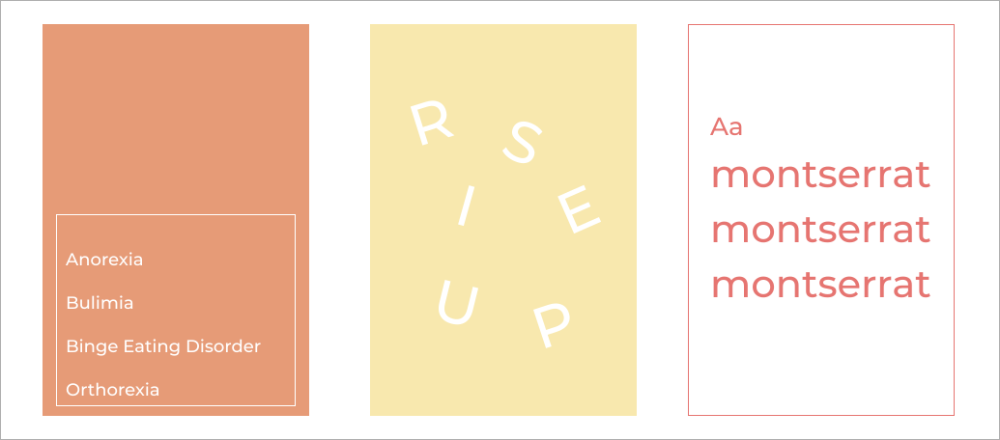
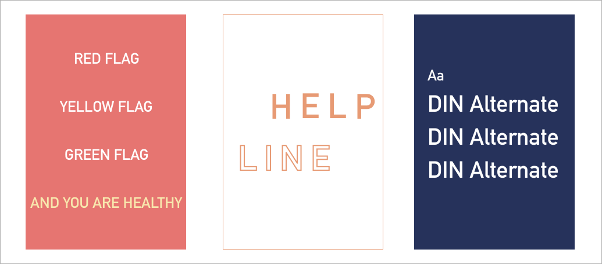

TYPOGRAPHY
Rise up's font choice
: Montserrat, DIN Alternate
Rise up picked Montserraat and DIN Alternate for the app typefaces.
Both are San-serif and San-serif is the great typeface for the body of text.
It increases readability and makes the app look clean and neat.
Montserrat
Montserrat is our most used typeface and mostly used for body text.
DIN Alternate
DIN Alternate is used for bold text such as headings, and body text that we want to emphasize.
